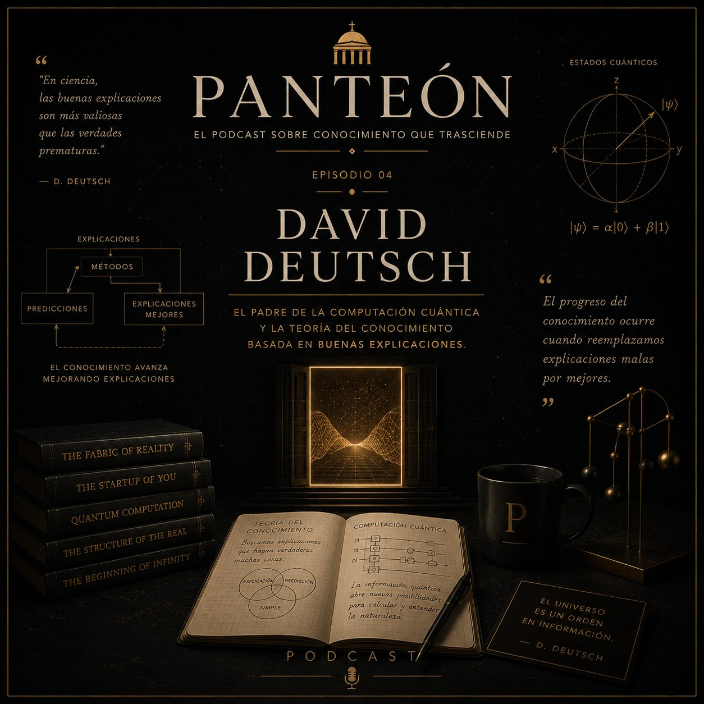
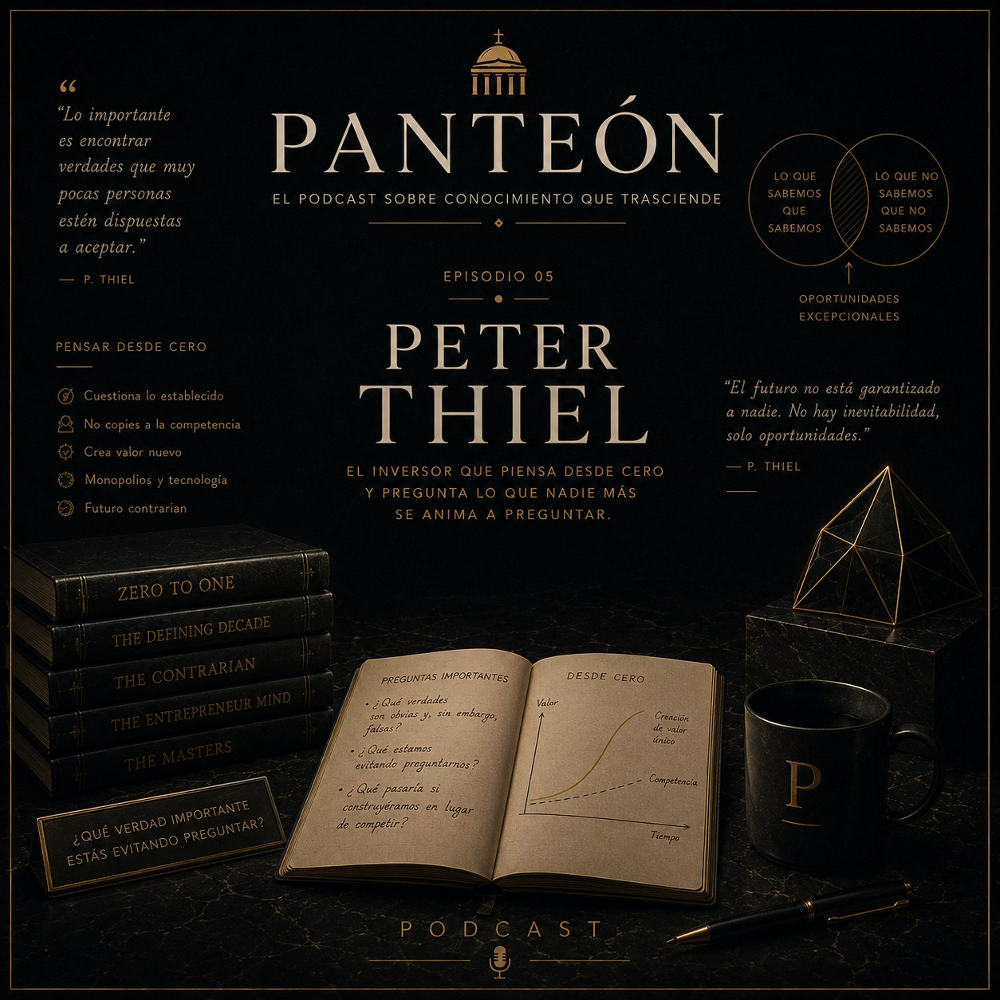
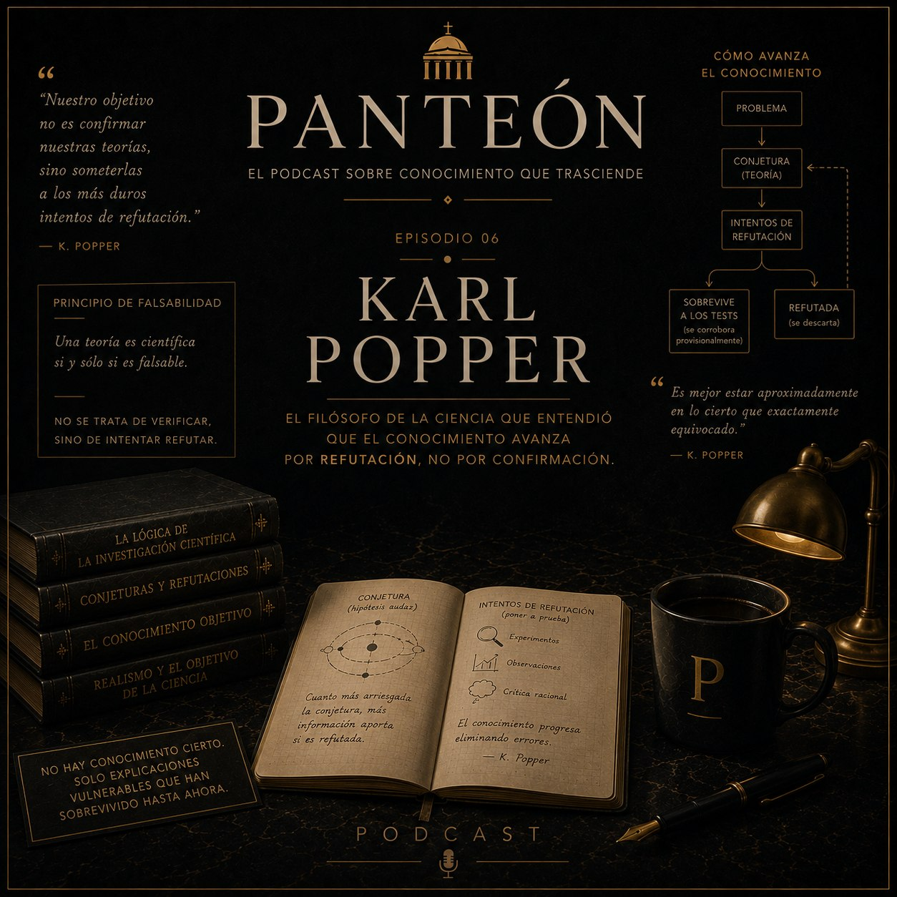
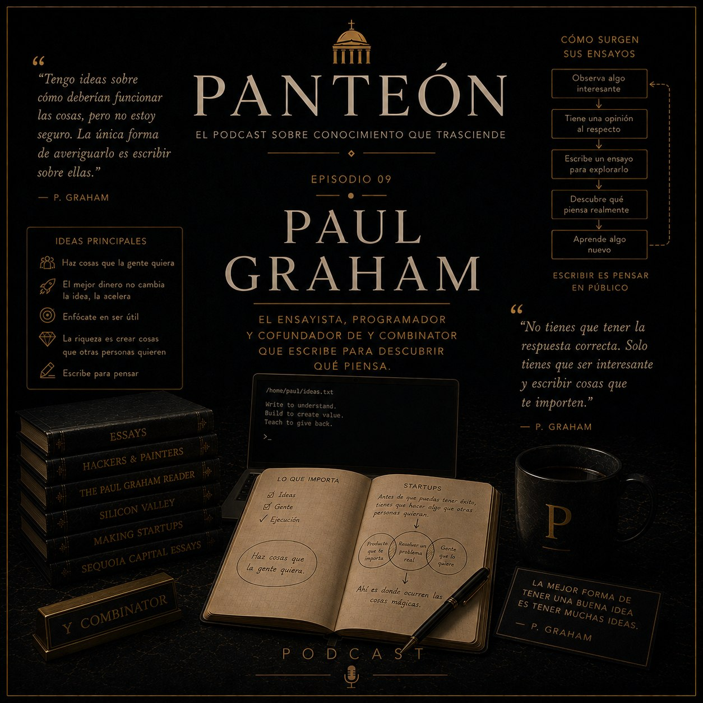
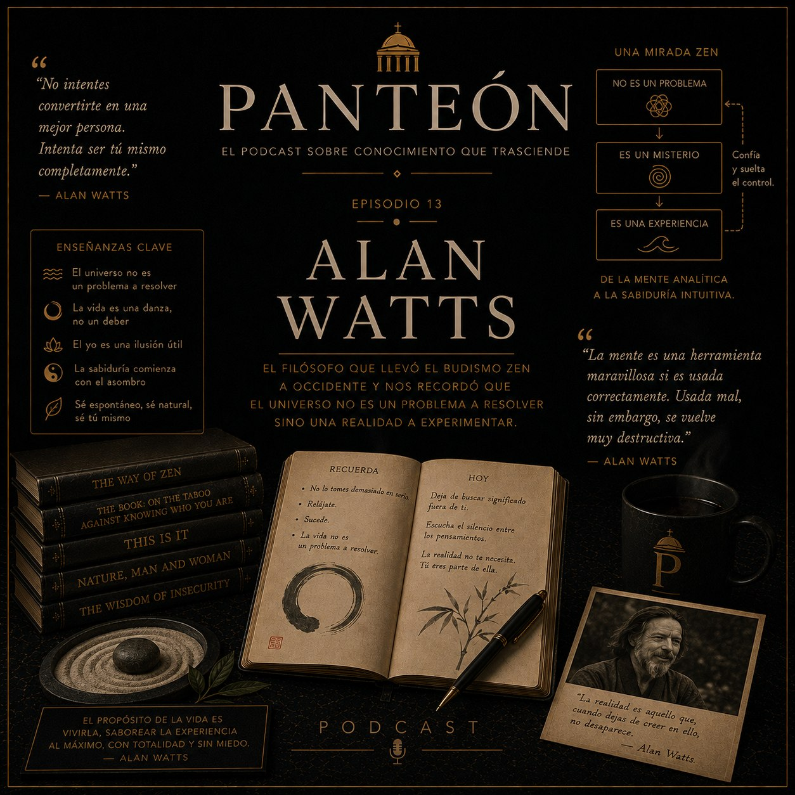
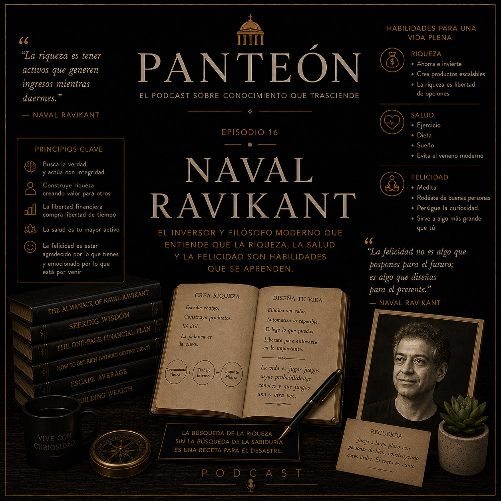

Panteón Personal — Audiolibro
16 pensadores que me formaron. Voz: Alonso (Español neutro). 17 capítulos.
-
Jorge Luis Borges⬇ Descargar
-
Richard Feynman⬇ Descargar
-
Nassim Nicholas Taleb⬇ Descargar
-

David Deutsch⬇ Descargar -

Peter Thiel⬇ Descargar -

Karl Popper⬇ Descargar -
Charlie Munger⬇ Descargar
-
Daniel Kahneman⬇ Descargar
-

Paul Graham⬇ Descargar -
Eliezer Yudkowsky⬇ Descargar
-
Marco Aurelio⬇ Descargar
-
Epicteto (y Séneca)⬇ Descargar
-

Alan Watts⬇ Descargar -
Jiddu Krishnamurti⬇ Descargar
-
Facundo Cabral⬇ Descargar
-

Naval Ravikant⬇ Descargar -
Conexiones entre ellos⬇ Descargar
📡 Escuchalo en Spotify
open.spotify.com/show/033gwQQ5IdTs3tlLgjXy9o
O suscribite via RSS:
RSS Feed:
open.spotify.com/show/033gwQQ5IdTs3tlLgjXy9o
O suscribite via RSS:
RSS Feed:
audiolibro.xml